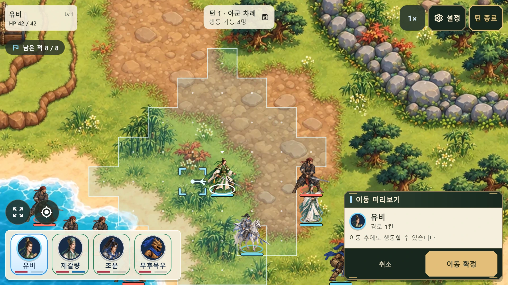

ANDROID · リリース準備中戦場を読み、
戦場を読み、
次の一手を指揮する。
三国志の武将たちが登場するファンタジー・ターン制タクティカルRPG。地形、移動範囲と射程を確認して行動を選びましょう。
実際のゲーム画面を見るオリジナルの宣伝用武将イラスト。以下のゲーム画面は現在のアプリで描画したものです。
横画面いっぱいの戦場を指揮
戦場をタッチし、移動範囲や味方の状態を確認。コンパクトなフローティングメニューから行動を選べます。


術で戦況を変える
体力と気力を管理し、対象と射程を確認して術を使用します。設定で戦闘演出の表示を切り替えられます。
キャンペーンは無料。広告削除は買い切り。
2戦目の勝利後に次の戦闘へ進む際から戦闘間の広告が表示される場合があります。3戦目以降の敗北後、再挑戦を確定した際も対象です。広告の間隔は最低2分。通信できない場合や広告がない場合も進行できます。
韓国での広告削除価格は5,000ウォンです。実際の現地価格はGoogle Playの購入画面で確認してください。購入で全画面広告が削除されます。能力や報酬は変わりません。
進行と設定は端末に保存されます。開発者アカウントやゲームサーバーは不要です。購入・復元・広告には通信が必要な場合があります。
現在、物語の会話は韓国語です。英語・日本語のメニューは利用できますが、物語全体の翻訳はまだ提供していません。
サポートへのお問い合わせ →